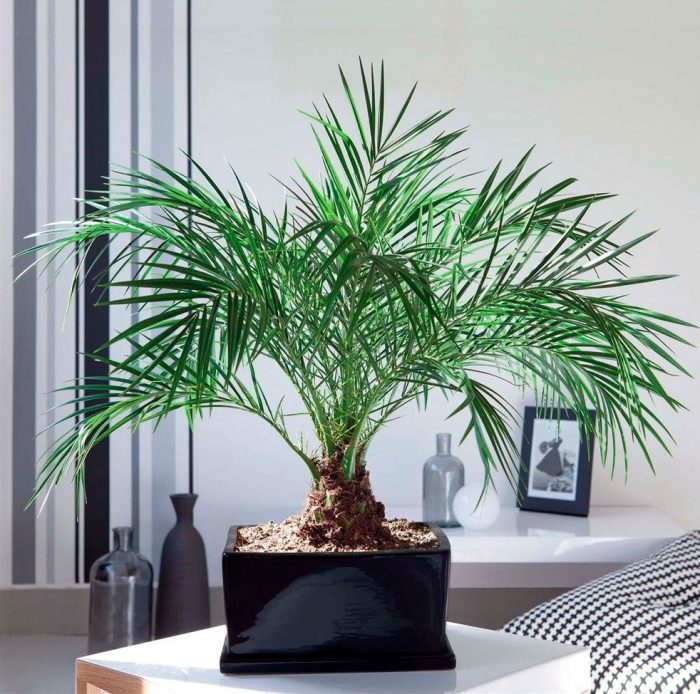
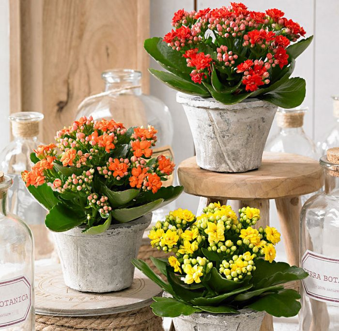
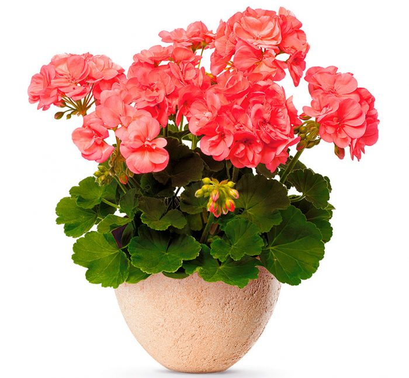
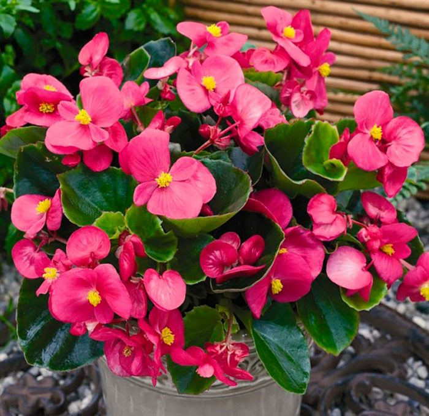

Финик Робелена
В семействе пальмовые (Palmae, Arecaceae) наиболее красивым видом фиников является финик Робелена (Phoenix roebelenii). В природе это растение встречается во влажных лесах Лаоса, в Бирме, Индии и Южном Китае.
Данное дерево не очень высокое. Так, в высоту оно может достигать лишь 2,5–3 метров. Имеется тонкий (примерный диаметр 14 либо 15 сантиметров) немного изогнутый либо прямой ствол. На поверхности нижней части ствола есть шрамы, из-за чего она сильно бугристая. Данные шрамы образуется в процессе взросления пальмы, они оставляются пеньками опавших нижних старых листьев. В верхней части ствола данные пеньки сохраняются, при этом поверхность ими покрыта довольно густо, что придает ему схожесть с большой щеткой имеющей форму цилиндра. В верхней части ствола находится пучок пышных ажурных листочков, которых насчитывается от 20 до 50 штук. Перисто-рассеченные, дуговидно-изогнутые, короткочерешковые листочки в длину могут достигать от 50 до 100 сантиметров. Узенькие мягкие доли листьев в длину достигают 12–20 сантиметров. Цветовой оттенок листвы напрямую зависит от освещенности. Находясь в солнечном месте, листва пальмы окрашивается в зеленовато-серебристый цвет. Если же освещение рассеянное, то листья приобретают темно-зеленый окрас. Молоденькие листья покрывает мучнистый беловатый налет.
Каланхоэ
Растение каланхоэ(Kalanchoe) является представителем семейства Толстянковые. Этот род объединяет больше 200 различных видов, при этом он представлен полукустарниками, суккулентами и травянистыми многолетними растениями. В природе это растение можно повстречать в тропических областях Азии, Австралии и Америки. Листва у разных видов может отличаться. Как правило, листья толстые, они бывают сидячие или обладают черешками, а еще могут быть слабо либо сильно рассеченными. Во время цветения образуется зонтик, в состав которого входят цветки белого, фиолетового, красного либо желтого окраса. В домашних условиях прекрасно растут почти все виды данного растения, если конечно цветовод придерживается правил ухода за культурой.
Пеларгония зональная
Красивоцветущее растение пеларгония зональная (Pelargonium) довольно широко распространено в комнатной культуре. В народе его чаще всего называют геранью, причем эта культура является частью семейства Гераниевые. Ее родиной считается Южная Америка. Это очень теплолюбивое растение. Этим оно и отличается от настоящей герани, которая относительна устойчива к холоду и встречается в средних широтах России (предпочитает расти на полях и лугах).
Пеларгония зональная была названа именно так из-за того, что на ее листве имеется особое окаймление — кольцевая зона, обладающая темным окрасом. Листовые пластины округлые и выемчатые. В состав побегов и листвы входят особые эфирные масла. Поэтому если дотронуться до них, то можно почувствовать специфический аромат.
Бегония вечноцветущая
Красивоцветущее растение бегония вечноцветущая (Begonia semperflorens) является частью семейства Бегониевые. В природных условиях его можно повстречать во влажных тропиках и в высокогорье Америки, Африки и Азии. Родом такой цветок из Бразилии. Здесь в лесной зоне и на побережье океана активное развитие растения наблюдается круглый год. В тех регионах, где климат умеренный, бегонию растят в комнатных условиях.
Этот многолетник нуждается в систематическом проведении омолаживающих процедур. Кусты растут довольно быстро и достигают высоты около полуметра. В течении года растение может увеличиться в размерах вдвое. Оно порадует своими прелестными цветками уже в год посадки. Эту разновидность недаром назвали вечноцветущей, эффектные цветки красуются на ее побегах на протяжении всего года.
